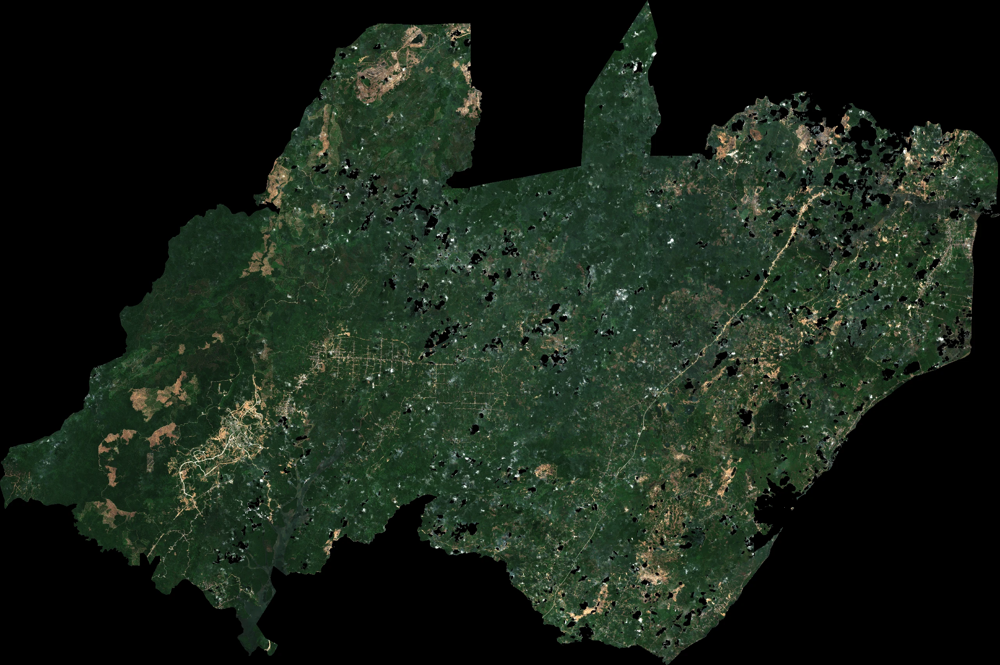
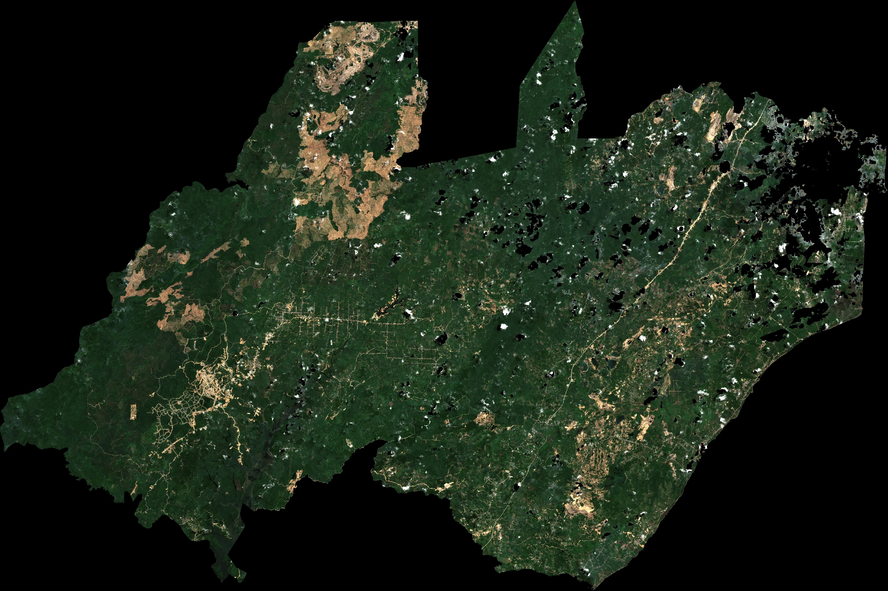

Analisis spasiotemporal perubahan tutupan vegetasi IKN April 2024 vs. April 2026, berbasis citra satelit Sentinel-2 dan algoritma smileRandomForest.
Ibu Kota Nusantara adalah proyek pemindahan ibu kota Indonesia dari Jakarta ke Kalimantan Timur, dirancang dengan filosofi Smart, Green, Beautiful, and Sustainable Forest City sebagai kota hutan berkelanjutan berwawasan masa depan.
Membuktikan secara empiris apakah pembangunan fisik IKN periode April 2024–2026 tetap konsisten mempertahankan komitmen 75% kawasan hijau, melalui analisis inderaja Sentinel-2 dan model Random Forest tanpa black-box.
Platform WebGIS publik sebagai instrumen transparansi spasial bagi akademisi, publik, dan pengambil kebijakan, dilengkapi dengan Early Warning System (EWS) alih fungsi hutan melalui integrasi WhatsApp OIKN via OpenClaw Gateway.
Peringkat zonasi tingkat urgensi pemantauan dan pengawasan alih fungsi vegetasi di wilayah Ibu Kota Nusantara.
Fokus: Pembukaan lahan konstruksi fisik Kawasan Inti Pusat Pemerintahan (5.644,39 ha). Mengalami laju pembukaan vegetasi tercepat (berkontribusi 60,4% total loss) akibat pembangunan infrastruktur utama (Istana, Kementerian, Sumbu Kebangsaan).
Fokus: Pengawasan alih fungsi di Bagian Wilayah Perencanaan. Memerlukan kendali tata ruang ketat untuk mencegah ekspansi residensial/komersial tidak terkendali yang dapat mengganggu Sabuk Hijau (Green Belt) kota.
Fokus: Rehabilitasi kawasan bekas tambang batubara dan lahan kritis. Menjadi jangkar utama untuk merealisasikan visi 75% kawasan hijau berkonsep Forest City melalui penanaman spesies tanaman endemik.
Geser pegangan slider di bawah ini untuk melihat transisi tutupan lahan dari Komposit Citra Satelit Sentinel-2 (April 2024) ke Prediksi Model Random Forest (April 2026).


Komposit citra Sentinel-2 True Color (RGB 4-3-2) bebas awan hasil mosaik GEE. Menampilkan tutupan vegetasi baseline April 2024 sebesar 184.795,31 ha (71,84%) di seluruh wilayah IKN (257.227,6 ha).
Hasil klasifikasi tutupan lahan menggunakan algoritma Random Forest (Akurasi 94,81%, κ = 0,8955). Prediksi vegetasi April 2026 sebesar 193.967,19 ha (75,40%), mengonfirmasi ketercapaian target Green Forest City.
Citra Sentinel-2 Level-2A (COPERNICUS/S2_SR_HARMONIZED) disaring untuk AOI IKN. Filtering cloud masking SCL bit 3, 8, 9, 10, 11 untuk eliminasi awan dan bayangan persisten.
Kalkulasi indeks spektral NDVI (kerapatan vegetasi) dan NDBI (kerapatan lahan terbangun), dikombinasikan dalam 8 stack band masukan (B2, B3, B4, B8, B11, B12, NDVI, NDBI).
Model smileRandomForest(100, 42) dilatih dengan 400 titik sampel observasi terstratifikasi (80/20 split: 323 data training & 77 sampel testing independen).
Operasi bitwise difference antara klasifikasi 2024 dan 2026 untuk mengekstrak poligon Reforestasi (717 Gain Poligon) dan Pembukaan Lahan (242 Loss Poligon KIPP).
// SCL Cloud & Shadow Masking (Sentinel-2 L2A)
function maskS2SCL(image) {
var scl = image.select('SCL');
var mask = scl.neq(3).and(scl.neq(8))
.and(scl.neq(9)).and(scl.neq(10))
.and(scl.neq(11));
return image.updateMask(mask).divide(10000);
}| Aktual \ Prediksi | Non-Vegetasi (0) | Vegetasi (1) |
|---|---|---|
| Non-Vegetasi (0) | 33 (TN) | 4 (FP) |
| Vegetasi (1) | 0 (FN) | 40 (TP) |
Diagnostik Error: 4 sampel False Positive terjadi pada area vegetasi ringan/semak terbuka yang terklasifikasi sebagai vegetasi karena reflektansi campuran di musim kering April.
Metrik hasil komparasi prediksi acak model Random Forest dengan dataset pengujian lapangan independen (testing split).
Metrik Performa Utama-20.610,92 ha (242 poligon) terdistribusi terkonsentrasi di sepanjang koridor pembangunan KIPP (Kawasan Inti Pusat Pemerintahan) dan konstruksi jalan tol IKN.
+29.782,80 ha (717 poligon) mendominasi area reforestasi dan revegetasi bekas lahan tambang/semak di zona penyangga IKN.
Distribusi spasial reforestasi (Gain) dan deforestasi (Loss) di 6 Bagian Wilayah Perencanaan (BWP) IKN. Deforestasi didominasi oleh pembukaan lahan infrastruktur di Kawasan Inti (BWP I), sedangkan peningkatan vegetasi didominasi oleh program rehabilitasi di Hutan Konservasi (BWP IV).
Berdasarkan hasil pemantauan spasiotemporal tutupan vegetasi 2024–2026, berikut rekomendasi aksi taktis spasial per Bagian Wilayah Perencanaan (BWP) untuk mempertahankan komitmen 75% kawasan hijau:
Wajib menerapkan standardisasi dinding hijau (green wall), atap hijau (green roof), serta penanaman koridor vegetasi pelindung di area infrastruktur KIPP untuk menekan UHI (Urban Heat Island).
Proteksi tutupan sekunder baru dan pembangunan kanopi layang penyeberangan satwa (eco-ducts) guna menghubungkan hutan lindung Bukit Soeharto yang terfragmentasi oleh koridor jalan tol.
Pembuatan sabuk hijau (greenbelt) pembatas menggunakan tanaman Vetiver Grass dan Bambu untuk memitigasi longsoran lereng kupasan tanah di sekitar kawasan logistik dan industri.
Penerapan tumpang sari tanaman pertanian lokal dengan tegakan pohon pelindung perakaran kuat guna menjaga stabilitas hidrologis Daerah Aliran Sungai (DAS) IKN dari sedimentasi lumpur.
Restorasi ekosistem hutan mangrove di pesisir Teluk Balikpapan serta pembatasan izin konstruksi resor fisik di sempadan sungai untuk melestarikan biota riparian dan estuari.
Pembangunan kebun botani koleksi benih lokal (ulin, kapur, meranti) sebagai laboratorium hidup (Living Labs) dalam pengembangan teknologi budidaya kehutanan tropika basah.
Portal pengiriman resmi draf laporan eksekutif analisis tutupan vegetasi Ibu Kota Nusantara. Ditujukan secara resmi kepada Otoritas Ibu Kota Nusantara (halo@ikn.go.id) atau alamat email instansi pilihan Anda.
Geser slider di bawah ini untuk mensimulasikan tambahan target reforestasi kawasan IKN dan secara instan menghitung proyeksi penyerapan CO₂ serta persentase capaian kawasan hijau.
Ground Truth Collection & Preprocessing Citra
Ground Truth Collection & Preprocessing Citra
Model Training Random Forest & Evaluasi Metrik
Model Training Random Forest & Evaluasi Metrik
Pengembang WebGIS & Custom Enterprise Portal
Integrasi citra radar polarisasi ganda VV/VH Sentinel-1 C-Band dengan perataan spekel Refined Lee untuk menembus tutupan awan persisten di Kalimantan saat musim hujan.
Pemodelan Above-Ground Biomass (AGB) dan stok karbon IKN menggunakan point cloud LiDAR 3D resolusi tinggi (< 0.5m) dan persamaan allometrik spesifik spesies.
Analisis deret waktu multi-temporal (Bimonthly Composites) dengan fit harmonik BFAST untuk memantau fluktuasi fenologi musiman dan memicu peringatan dini alih fungsi lahan.
Unduh dataset mentah, poligon hasil klasifikasi, dan skrip Google Earth Engine untuk transparansi riset dan reproduksi analisis spasial.
Batas delineasi AOI IKN 257.227,6 ha — poligon batas resmi dari OIKN.
Bagian Wilayah Perencanaan (BWP) IKN seluas ~50.000 ha (skala 1:50.000).
Batas Kawasan Inti Pusat Pemerintahan (KIPP) IKN seluas ~6.671 ha.
Hasil klasifikasi tutupan vegetasi hijau baseline April 2024.
Hasil klasifikasi prediksi tutupan vegetasi hijau April 2026.
Poligon deteksi pertambahan vegetasi baru / penghijauan kembali (+29.782 ha).
Poligon deteksi kehilangan vegetasi / pembukaan konstruksi fisik (-20.610 ha).
400 titik sampel spasial terstratifikasi (NDVI, NDBI, class, year).
Dataset tabular 400 titik sampel lengkap dengan tanda kelas lapangan.
Matriks evaluasi model 2x2 untuk 77 titik data pengujian independen.
Ringkasan luas baseline, prediksi, gain, loss, net change, dan parameter ML.
Objek data JSON terstruktur berisi seluruh metrik model statistik spasial.
Breakdown statistik luas tutupan vegetasi terperinci per zona administrasi IKN.
Skrip lengkap smileRandomForest (100 Trees) dengan filter mask Scene Classification (SCL).